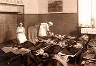
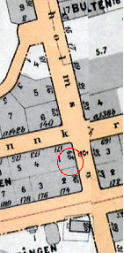
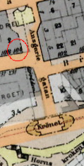
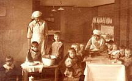
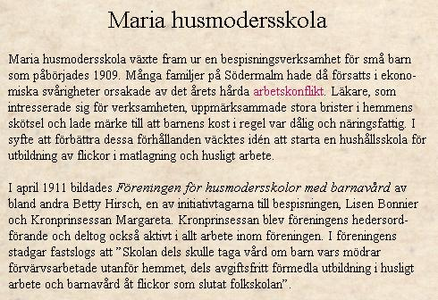
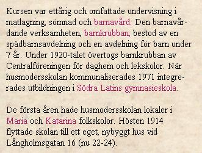
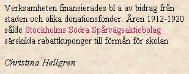
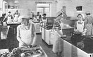

|
Maria husmodersskola
Ur Västra Södermalm, Arne Munthe, 1965
Ursprunget till Maria husmodersskola går tillbaka på storstrejksåret 1909. Med en
filantropiskt sinnad dam, fröken Betty Hirsch, som drivande kraft bildades då en förening för
att ordna småbarnsbespisning för de hårdast drabbade söderfamiljerna. Under denna
verksamhet uppmärksammades, vilka brister, som ofta fanns i hemmens skötsel. Så föddes
tanken på en permanent skola med den dubbla uppgiften att ta hand om barn till mödrar med
förvärvsarbete och att utbilda flickor i husligt arbete och barnavård. Stadgar för stiftelsen
fastställdes den 12 april 1911.
|

 Maria husmodersskola, tidigt Långholmsgatan 16B, Hornsgatan 174. Middagsvila för de lite större barnen. Maria husmodersskola, tidigt Långholmsgatan 16B, Hornsgatan 174. Middagsvila för de lite större barnen.
|
|
Under de första sju åren fick skolan helt lita till frikostigt understöd från privat håll. Mycket betydde
det aktiva intresse, som kronprinsessan Margareta visade ända från starten. Genom ett initiativ av Ivan Bratt - de gula spårvagnskorten utan
rabattkupong - tillfördes skolan också under åren 1912-1920 ett betydande belopp, omkring
100.000 kronor.
Med den ursprungliga husmoderskursen på tio månader som stomme har
verksamheten under årens lopp blivit allt rikare förgrenad, nu även med vissa kurser för män,
bl.a. i matlagning.
|
Under en tid ingick i programmet också en direkt socialvårdande
verksamhet: exempelvis organiserades klubbar av olika slag bland söderungdomen. För den
lyckosamma utvecklingen har det säkerligen betytt mycket att i spetsen för skolan under var sin
långa rektorsperiod stått två sällsynt dugande krafter, först Anna Höglin och sedan Ruth Ager.
|


|
|
Under de första åren var skolan delad på var sin avdelning i Maria och Katarina.
Verksamheten sammanslogs 1914 och överfördes till ett nybyggt hus vid Långholmsgatan, som
efter några år övergick i stiftelsens ägo tack vare en frikostig donation av Alice Wallenberg.
Sedan nyåret 1947 är skolan inrymd i den vackra tegelstensbyggnad på Brännkyrkagatans krön
mot Ansgariigatan, som nu ligger i fil med Högalidsgården. Som arkitekt för nybyggnaden, som
redan visat sig otillräcklig för den växande verksamheten, hade stiftelsen anlitat Nils Sterner.
|
|
Maria husmodersskola behöll sitt gamla namn även efter tillkomsten av Högalids församling, inom
vars område den helt haft sin hemvist med undantag av de allra första åren. En etisk livssyn vid sidan
av den praktiska undervisningen har alltid ingått i målsättningen och tagit sig uttryck i direkt
samarbete mellan skolan och hemförsamlingen: kurser har sålunda ordnats tillsammans med Högalids
studiegård och under en följd av år erhöll elevgrupper konfirmationsundervisning i Högalid.
Ett
exempel bland många på privata skolföretag, som gjort en pioniärinsats inom utbildning och uppfostran, bedriver Maria husmodersskola numera sin verksamhet med ekonomiskt stöd både av stat och
kommun.
|
|

Lekstund vid bordet och jobb vid diskbaljan. Tidigt Långholmsgatan.
|
För en del av de tidigare verksamhetsgrenarna har samhället nu skapat egna organ - en
karakteristisk utveckling, som icke bör skymma undan värdet av den grundläggande insatsen
Från CD:n Söder i våra hjärtan:

|

|
|

|

|
|
|